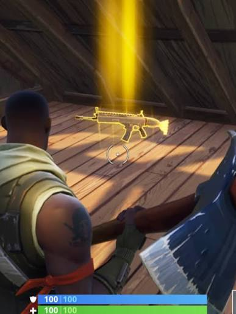

Lost Something?
Query open inventory data paths or securely register an active missing item profile with our intake handlers.
Find My Item
Found Something?
Turn in discovered property to systematic repository networks across campus for immediate reconciliation.
Turn In Item
Campus Retrieve bridges the gap between what's missing and what's possible — leveraging technology to reunite people with their belongings while creating community through weekly reward-driven experiences.
Lost Something Important?
Find My Item
Found Something That Isn't Yours?
Turn In ItemLooking For Weekly Giveaways?
Weekly GiveawaysRecently Found Items
Recently Lost Items
Retrieval Policy
Our ultimate goal is to reunite you with your long-lost property as
quickly and safely as possible—balancing ironclad campus security
with standard student convenience. However, because our public
website essentially lets the entire internet browse the digital
graveyard of your lost things, we can't just hand out MacBooks to
anyone with a convincing sad face, meaning you’ll have to survive
our verification gauntlet first. To successfully unlock your
property from our custody, you must provide distinctive details not
visible online—like a specific scratch, a quirky anime keychain, or
the exact, deeply embarrassing contents of your backpack—and if you
are claiming an electronic device, you must successfully unlock it
via password or biometrics right in front of our unimpressionable
staff. To finalize the rescue mission, you’ll need to flash your
official Student ID Card, though if you managed to lose that too, a
government photo ID paired with digital proof of enrollment from
your student portal will suffice. If you are stuck in a brutal
three-hour lab or are too sick to move, you can send a trusted
proxy, provided you email us from your official student account with
their full name ahead of time; your designated minion must then show
their own Student ID and assume full, terrifying financial and
social responsibility for your item the moment it hits their hands.
Please keep in mind that space is a premium commodity, and because
we are running a capitalist thunderdome and not your personal
storage locker, your abandoned items are on a strict doomsday clock
heading straight for the campus auction block. Absolutely nothing
escapes the gavel. Perishable goods, unwashed gym gear, and open
liquids will be auctioned off within 24 hours to the bravest, most
iron-stomached bidder before they become a biohazard. Standard items
like textbooks, keys, backpacks, and clothing get 30 days before
hitting the stage, while high-value treasures get a 60-day grace
period. Yes, this includes your laptops, smartphones, wallets, cash,
and even your official state or federal documents—all sold as-is to
the highest bidder. And no, we will not be wiping any hard drives or
deleting any data, so if you don't claim your laptop in time, the
highest bidder inherits your entire digital life, your unfinished
essays, and your bizarre search history. All auction proceeds and
unclaimed cash are funneled directly into student scholarship funds,
so thank you for funding someone's education with your carelessness.
Ultimately, our staff reserves the absolute right to deny the return
of any item if your story feels a bit too fictional, and
intentionally trying to claim property that doesn’t belong to you
explicitly violates the Student Code of Conduct—meaning we will
report you to the Dean faster than you can say "going once, going
twice, sold!"